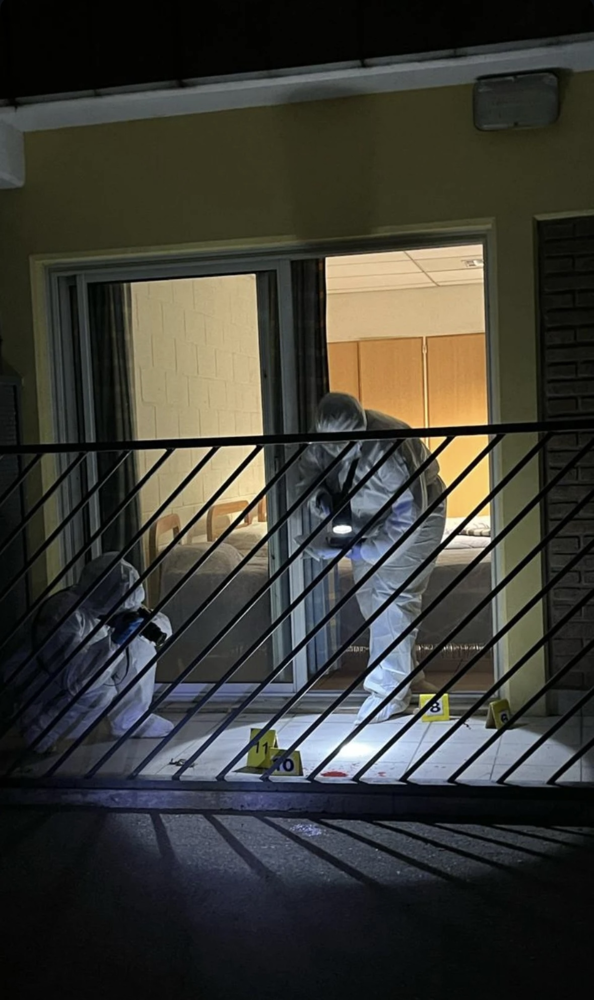
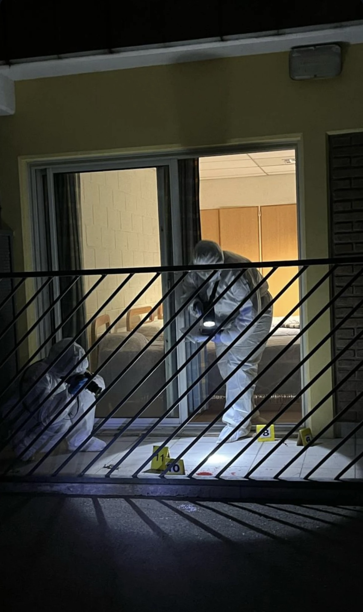

Promovamos el aprendizaje
Un lugar para aprender, compartir y visibilizar la labor de los profesionales forenses

Un lugar para aprender, compartir y visibilizar la labor de los profesionales forenses
Servicios que ofrecemos


.JPG)

.JPG) 

Si la criminalística es tu pasión, este es tu lugar. En CRIMINALÍSTICAOK, nos dedicamos a compartir contenido de valor para profesionales y estudiantes del área forense. Vas a encontrar información actualizada, definiciones clave, eventos como congresos y capacitaciones, y también contenido motivacional para inspirarte en tu camino.
La ciencia forense evoluciona constantemente, y nuestro objetivo es brindarte las herramientas y conocimientos que necesitas para seguir creciendo. Súmate a nuestra comunidad y mantente al día con el fascinante mundo de la criminalística.
¿Qué opinan otros profesionales en criminalística acerca de nuestro trabajo?
"Como abogado litigante, valoro profundamente la calidad de los contenidos compartidos. Son herramientas que aportan claridad y rigor al análisis de la prueba pericial. ¡Altamente recomendable!"

"Un proyecto serio, ético y comprometido con la formación continua. Las capacitaciones superan las expectativas y el material didáctico es de primer nivel."
"Las capacitaciones online ofrecidas por este equipo son claras, actualizadas y sumamente útiles para el ejercicio profesional. Se nota la seriedad y dedicación con la que se trabaja."
Estamos aquí para responder tus preguntas y discutir cómo podemos ayudarte.
infocriminalisticaok@gmail.com